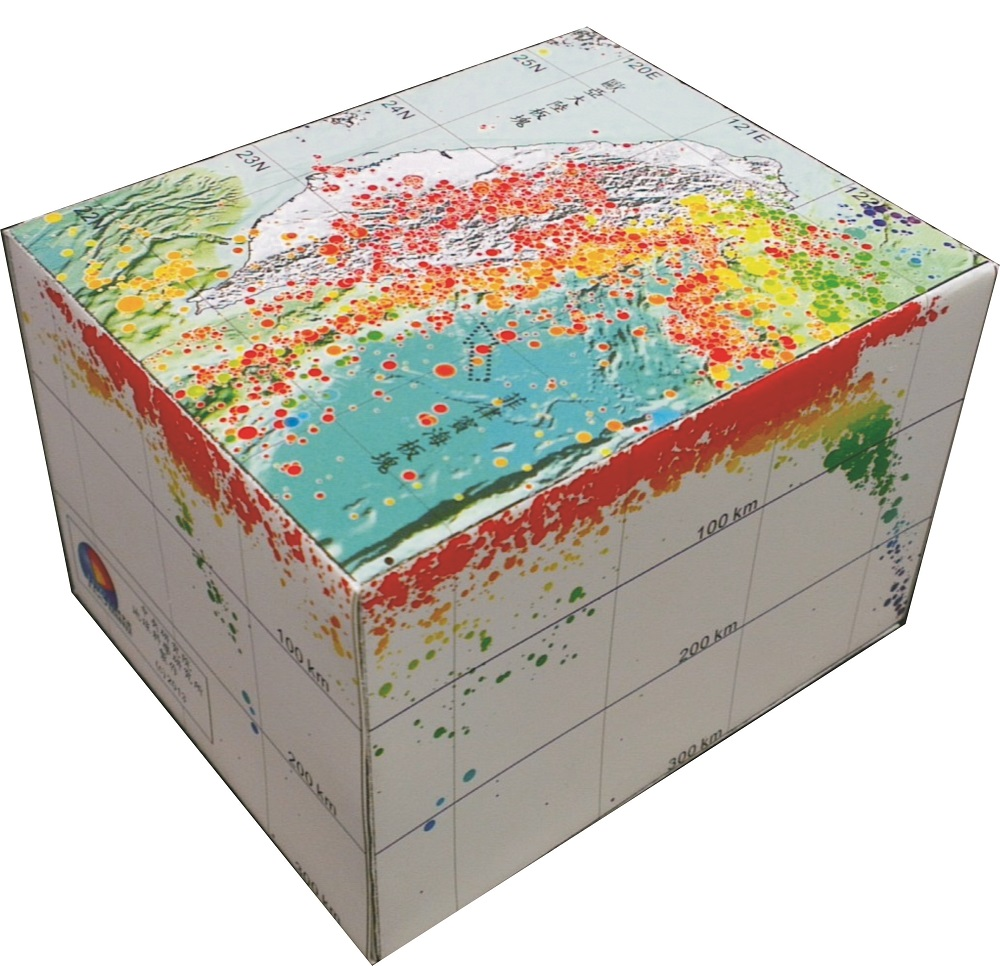
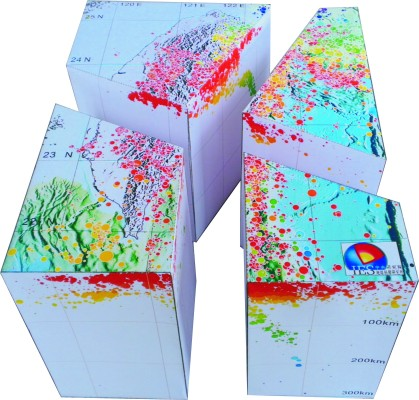

有很多人對台灣的地震活動相當關心，也有興趣了解台灣的地震活動分布，但是平面的震央分布或者虛擬的三維展示都不若在手上操控立體模型來的直接、有趣。許多單位都曾製作透明壓克力的地震分布立體模型，但是成本不低，難以在教育推廣上大規模應用，為了普及台灣的地震科學教育，我們根據氣象局提供的高品質地震目錄資料，設計並繪出這些地震分布的紙模型展開圖，將三維的地震震源位置投影在地面和不同的深度剖面上，每個人只要彩色列印並且加以剪裁黏接之後，就成了物美價廉的立體模型，除了讓一般人都能輕易地看出地震好發的區域和深度之外，也能對台灣的地體構造有深一層的體會。

台灣的地震分布與地體構造活動
台灣位於歐亞板塊與菲律賓海板塊的交會處，由於板塊之間劇烈的交互作用，台灣地區的地殼變形與地震活動相當活躍。兩大板塊的縫合帶約略位於花東縱谷底下，而在台灣的東北外海，菲律賓海板塊往北隱沒到歐亞板塊之下，形成琉球島弧與弧後擴張的沖繩海槽；另一方面，在台灣的南端，反而是歐亞板塊隱沒到菲律賓海板塊下方。這兩個隱沒系統與由板塊碰撞所引發的造山運動，以不同深度與不同錯動方式的地震呈現。這個紙模型描繪出台灣地震活動在地面(即震央)與四周剖面的投影位置，協助理解台灣的地震活動分布與三維的地體構造。

在台灣地區，氣象局地震測報中心平均每天可偵測到超過50個以上的地震，規模愈小的地震個數愈多，為了兼顧繪圖的效率與地震的代表性，我們取用1991-2012年間規模3.5以上的地震當作這些紙模型的基本資料。圓形符號的大小與規模正相關，顏色則表示地震的震源深度，顏色所對應的深度值可在剖面上讀取。在地面上以台灣的地形為背景，可以由震央分布的位置清楚看出地震密集區；四邊的剖面是取距離200公里內的地震作側投影所得到的地震分布圖，組合模型的內部地震剖面則是僅取兩側20公里內的地震投影所得。南部與東北部的側剖面上，與隱沒作用息息相關的深源地震清晰可辨。